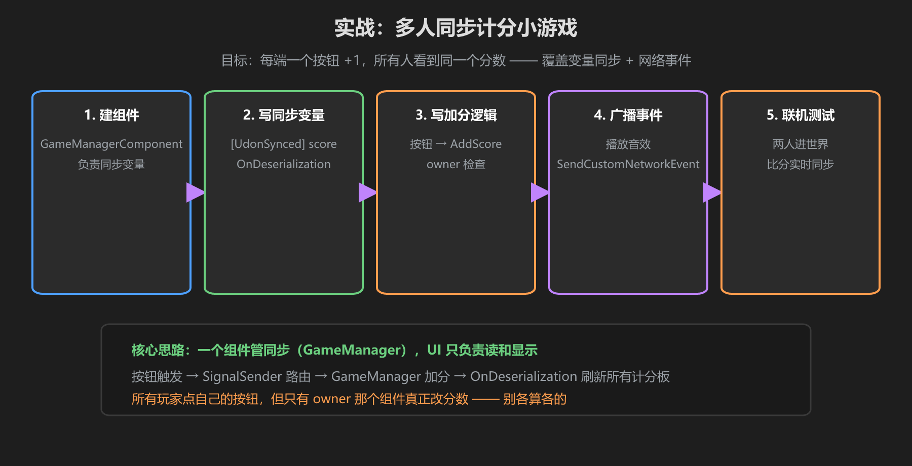
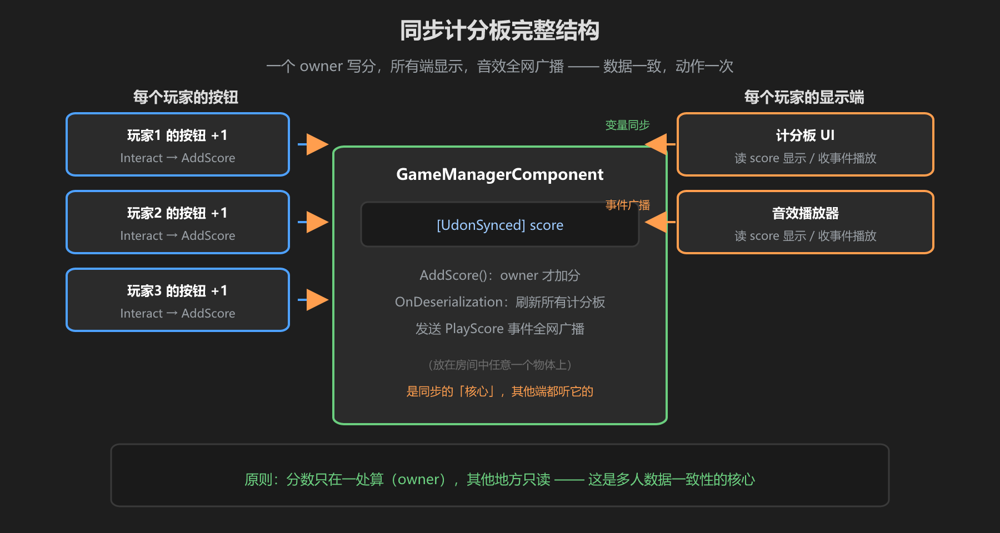

第 5 篇：实战 — 多人同步计分小游戏
把前四篇串起来：做一个多人计分小游戏 —— 每个玩家面前一个按钮，点一下 +1，所有玩家看到同一个分数，每次加分所有人听到一声音效。

图：建组件 → 写同步变量 → 加分逻辑 → 广播事件 → 联机测试
步骤 1：创建 GameManager 物体与脚本
新建一个空物体 GameManager，挂上 GameManagerComponent（UdonSharpBehaviour）。同步的核心都放在这一个组件里 —— 分数只在这一处被修改。
using UdonSharp;
using UnityEngine;
using TMPro;
using VRC.SDKBase;
public class GameManagerComponent : UdonSharpBehaviour
{
[SerializeField] private TextMeshProUGUI scoreText; // 计分板文字
[SerializeField] private AudioSource scoreSound; // 加分音效
[UdonSynced] private int score; // 唯一的分数来源
public override void OnDeserialization()
{
RefreshUI(); // 收到同步数据：刷新计分板
}
public void AddScore()
{
// 只有 owner 才真正加分
if (!Networking.LocalPlayer.IsOwner(gameObject)) return;
score += 1;
RefreshUI(); // owner 自己刷新
SendCustomNetworkEvent(NetworkEventTarget.All, "PlayScoreSound"); // 广播音效
}
public void PlayScoreSound()
{
scoreSound.Play(); // 每个客户端各播一次
}
private void RefreshUI()
{
scoreText.text = "分数：" + score.ToString();
}
}步骤 2：给每个玩家摆按钮
场景里给每个玩家位置放一个按钮（UnityUI Button 或 VRC 交互物体）。把按钮的点击事件接到 GameManager 上，调用 AddScore()。
按你项目的架构来：本教程项目用信号架构 —— 按钮 Trigger → SignalSender 路由 → GameManagerComponent.AddScore()。逻辑一样，只是中间多一层信号转发。
步骤 3：放计分板 UI
放一个 TextMeshPro 文本作为计分板，把引用拖到 GameManagerComponent 的 scoreText 上。每个玩家的计分板都要指向同一个 GameManager 组件 —— 它们读的是同一份同步数据。
步骤 4：加分音效
给 GameManager 挂一个 AudioSource（3D 音效可以放房间中央），拖进 scoreSound。加分时事件广播，全网同时播放。

图：按钮 → GameManager（owner 算分）→ 所有端显示 + 全网播音效
步骤 5：联机测试
- 用 VRChat 客户端开两个账号（或找人一起）进世界
- A 点按钮 → 两边计分板同时 +1、两边都响
- B 点按钮 → 同样全网生效（注意：最终数据都经过 owner 的 GameManager 算分）
- 测试新玩家加入：分数会直接同步给他（变量同步），但之前的音效不会重播（事件不重放）
为什么会「两边都 +1」却只有一个分数？因为按钮只是「通知」，真正算分只有 owner 的 GameManager 做一次。这就是第 4 篇说的一致性 —— 别把算分逻辑写在按钮上。
学前检查清单
- 完成 GameManager 脚本并配置 [UdonSynced] 分数
- 按钮点击接入了 AddScore()
- 计分板 UI 指向 GameManager 组件
- 加分音效通过网络事件广播
- 多人联机测试通过：分数一致、音效同步